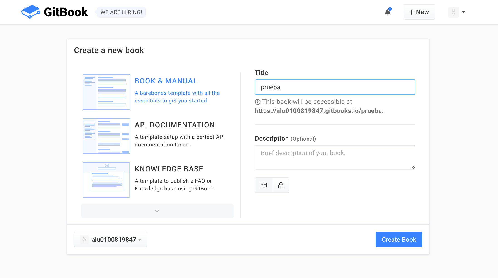
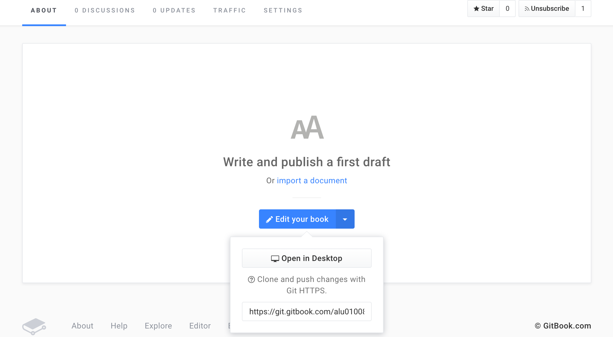
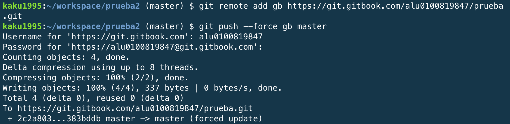
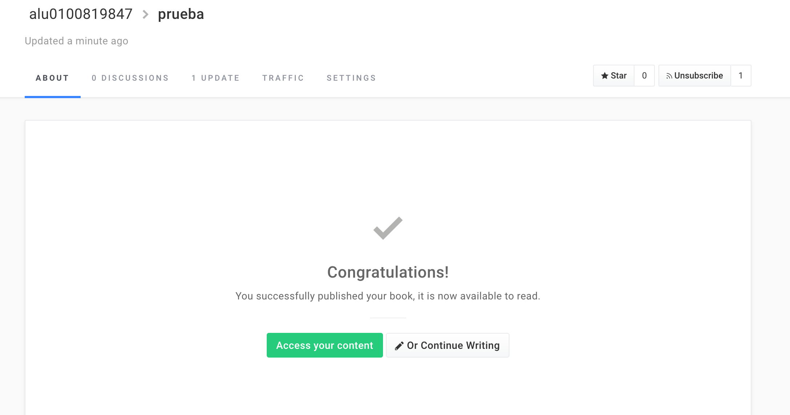

Gitbook
Introducción
Gitbook es una herramienta implementada usando NodeJs que permite la creación simple de libros y documentación de proyectos haciendo uso de Markdown. Mediante ficheros con extensión .md gitbook compondrá el libro deseado, además nos da la posibilidad de crear tanto pdf, ebook o web.
Instalación.
Para su instalación es necesario tener instalado node.js, y el comando necesario sera: npm install -g gitbook-cli, pudiendo solicitar el uso de sudo, sudo npm install -g gitbook-cli. En este caso la forma de instalación es la misma tanto para linux como para mac os.
 .
.
Uso Básicos
Algunos comandos básicos para el uso de gitbook pueden ser:
- gitbook init
. Crea la estructura básica para el desarrollo del libro. - gitbook build. Compondrá un html con el conjunto de ficheros en formato Markdown dentro del directorio.
- gitbook serve. Compondrá un html lanzará un servidor local en el puerto 4000 desde el que tendremos acceso al libro.
Gitbook.com
Para crear un libro en gitbook.com, es necesario estar registrado en la página de gitbook:
A continuación, en el menú principal se selecciona la opción de New Book:
Seleccionar un tipo de documento y nombre:

De esta manera, ya tenemos creada la estructura básica, y podemos añadir nuestros documentos como si fuese un repositorio normal de github:



Y ya tendríamos incluido el libro.